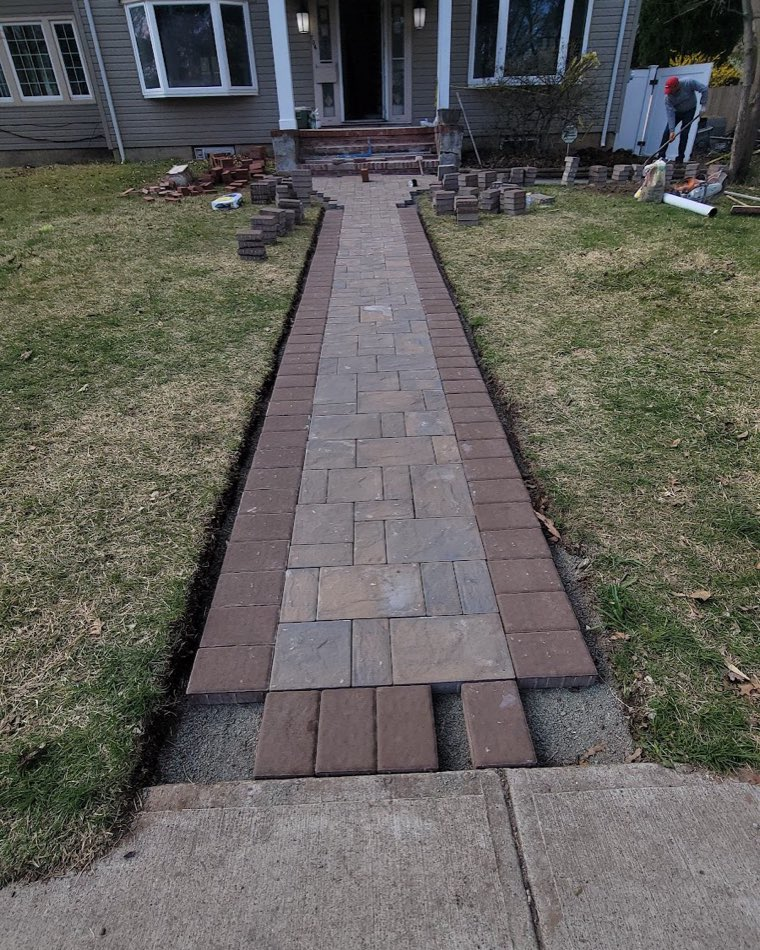
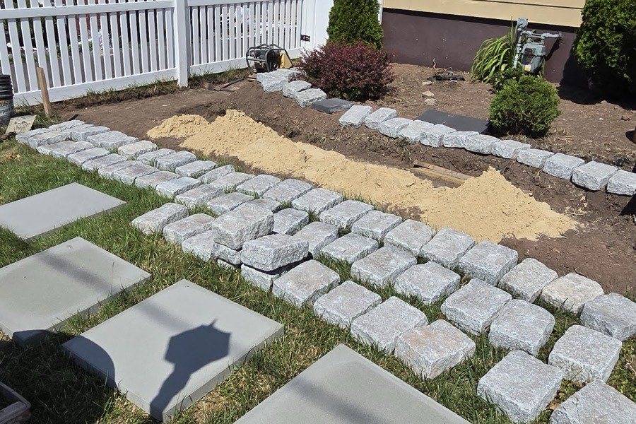
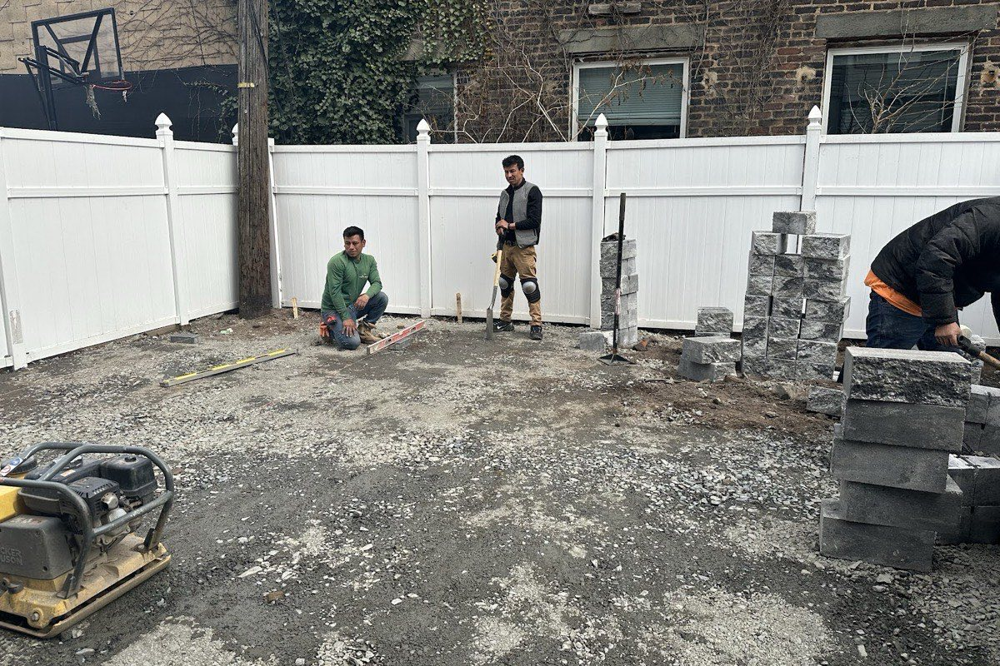
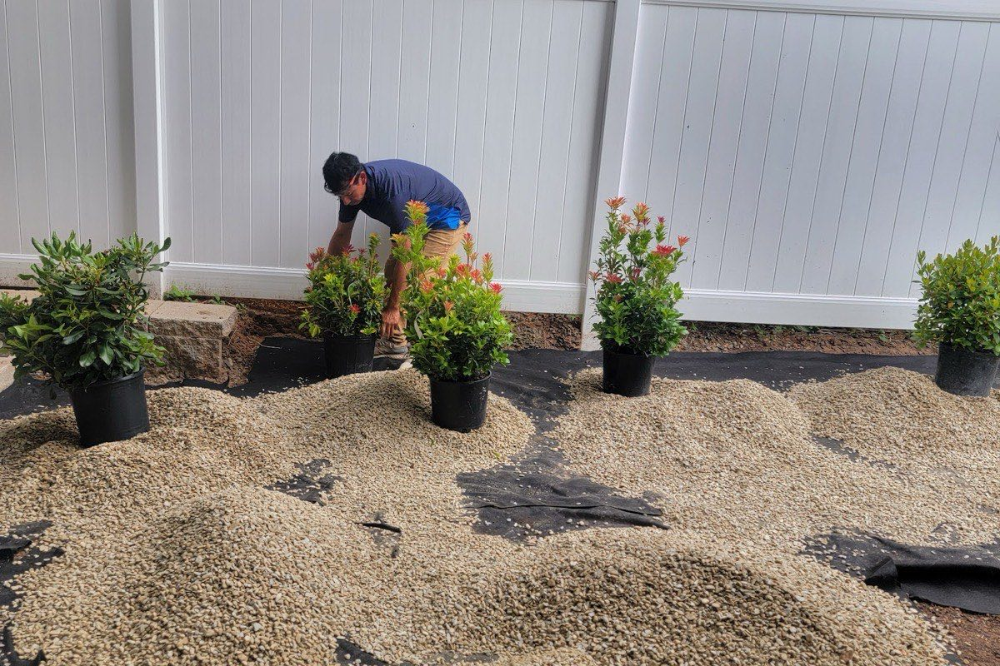
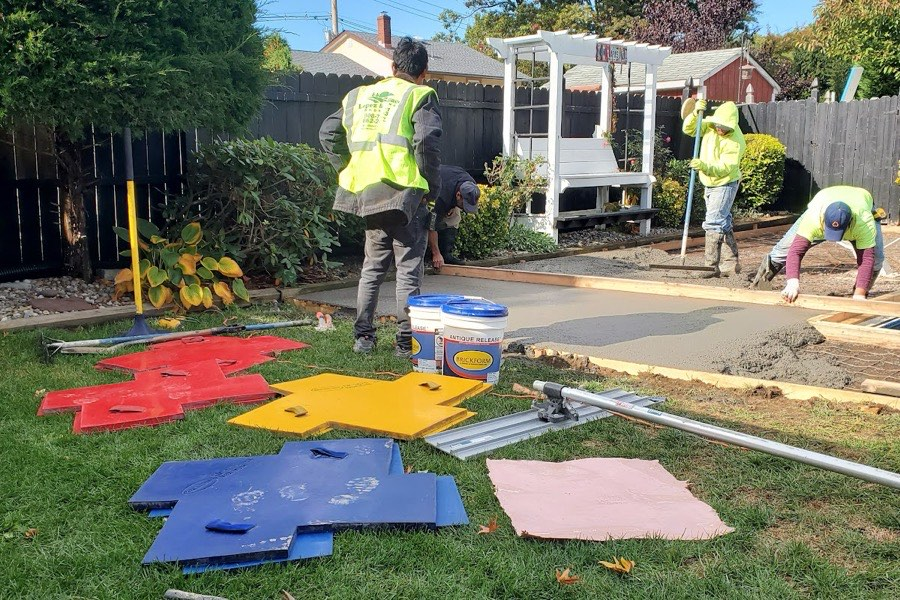
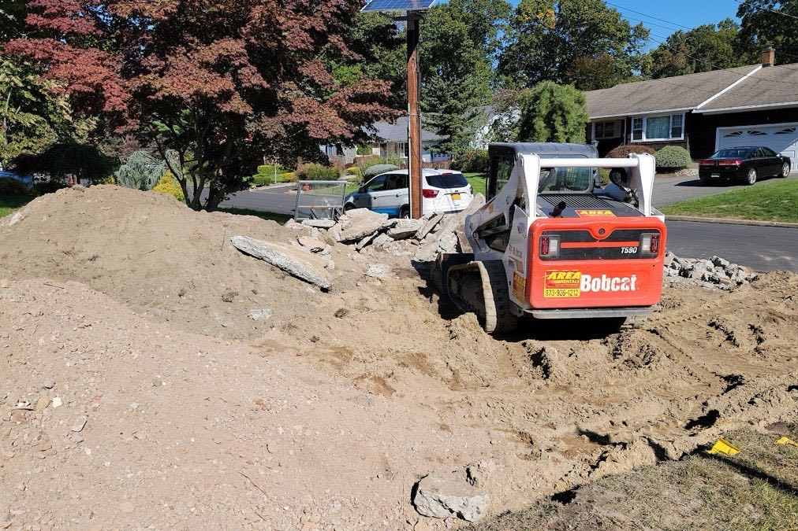
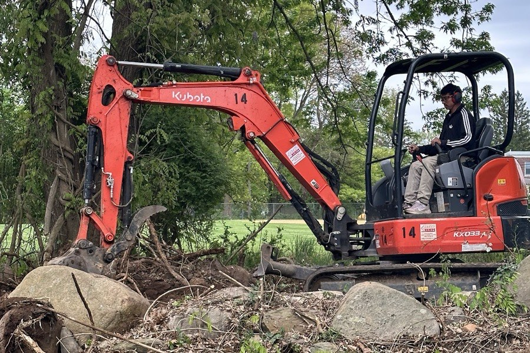

Paver Patios
Backyard patios and seating areas in pavers or natural stone — set on a compacted base so they stay level through New Jersey freeze-thaw winters.
NJ Masons lays paver patios, walkways, driveways, retaining walls and natural stonework across Westfield and Union County — the kind of base-prep-first work that still looks sharp years after the crew leaves.

From a single front walkway to a full backyard with seating walls and a patio, every project starts with a solid base and ends with clean, tight joints. Here’s what we’re called for most.
Backyard patios and seating areas in pavers or natural stone — set on a compacted base so they stay level through New Jersey freeze-thaw winters.
Front walks, garden paths and masonry steps that tie the entry together and give guests a clean, even path from the curb to the door.
Paver and Belgian-block driveways and aprons — a durable, great-looking upgrade over plain asphalt that lifts the whole front of the house.
Engineered retaining walls to hold back grade and tame slopes, plus seating walls and fire-pit surrounds that make a yard livable.
Belgian-block edging, stone veneer, brick repair and accents — the detail work that makes a property look finished, not just built.
Excavation, regrading and drainage before the stone ever goes down — the part nobody sees, and the reason the finished work holds up.
Every photo below is our own crew on an actual project — from the dig and base prep to the last paver set. No stock images.






Want to see work closer to your block? Ask for recent projects in your town when you call.
No mystery, no runaround. Here’s what working with NJ Masons looks like from the first call.
Tell us what you’re picturing — a patio, a wall, a new walkway. We’ll set up a time to come see it.
We walk the space, talk materials and layout, check grade and drainage, and give you a clear, free estimate.
We excavate, compact a proper base, then set the pavers or stone with tight, clean joints — done right the first time.
We walk the finished work with you, clean the site, and leave you with a space that’s ready to use.
A patio is only as good as what’s under it. We do the unglamorous part — the digging, compacting and drainage — properly, so the surface you paid for stays flat and tight for years.
Proper excavation, compaction and grading before any stone is set — the difference between a patio that lasts and one that heaves.
You’re not handed off to a sub. The person who quotes your project is on site while it’s being built.
Pavers, Belgian block, natural stone, brick — set with clean lines and tight joints so the finish matches the price.
Based in Westfield and working the towns around it — close enough to come back if anything ever needs a look.
A few words from real customers on Google. Rated 4.5 across 8 reviews.
“Nelson Lopez himself the owner together with his workers did a great job making my driveway, steps, retaining walls and walkway like no other.”
“Lopez & Wallace Landscaping came to give me an estimate on a pool removal and backfilling to then install a paver patio with lighting, sod and seating walls with fire pit area.”
NJ Masons is based in Westfield and builds hardscape and masonry projects across central Union County. If you’re nearby and don’t see your town, just ask — we cover most of the area.
No. On-site estimates for paver patios, walkways, driveways, walls and stonework are free. We come out, look at the space, and give you a clear price with no obligation.
Paver and stone patios, walkways and steps, driveways and aprons, retaining and seating walls, fire-pit areas, Belgian-block edging, and brick and natural-stone accents — plus the excavation, grading and drainage that go with them.
We’re based in Westfield and work across central Union County — Cranford, Scotch Plains, Fanwood, Garwood, Mountainside, Clark, Springfield and the surrounding area. If you’re close by, give us a call to confirm.
In New Jersey, freeze-thaw cycles push poorly-built hardscape around — pavers settle, walls lean, joints open up. We excavate and compact a proper base and handle drainage first, which is what keeps the finished surface flat and tight over the years.
Call or text (908) 228-0329, or send the quote form on this page. Tell us roughly what you’re after and we’ll set up a time to come take a look.
Tell us what you’re planning and we’ll come take a look — no charge, no pressure. Most estimates are scheduled within a few days.
Send a few details and we’ll get right back to you.